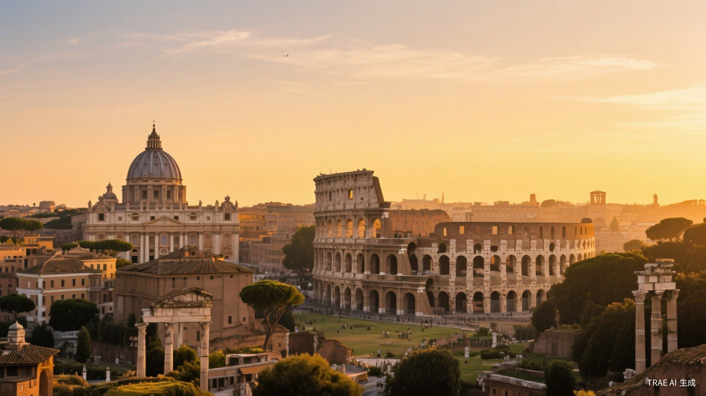
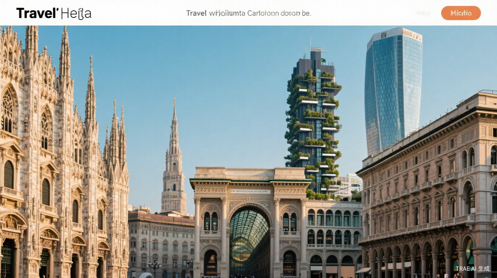
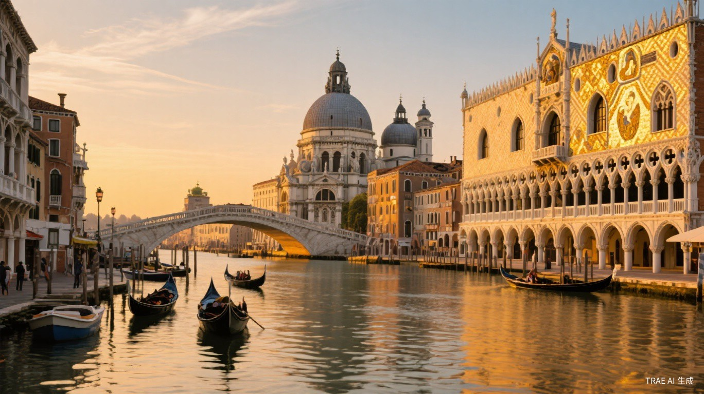

Esplora le città più belle d'Italia
四座城市，数百个景点，涵盖古典遗迹、文艺复兴建筑、当代建筑大师作品及经典电影取景地。点击城市卡片，开启你的意大利之旅。

永恒之城，从古罗马斗兽场到当代建筑大师作品，跨越两千年的建筑史诗。角斗士、罗马假日、甜蜜的生活的取景圣地。
文艺复兴发源地，布鲁内莱斯基穹顶、乌菲兹美术馆、美第奇家族建筑群。但丁密码、看得见风景的房间的取景圣地。

时尚之都，从哥特式大教堂到垂直森林，从达·芬奇《最后的晚餐》到碟中谍7追车现场，古典与先锋在此交汇。

水上之都，圣马可广场、大运河、贡多拉、穆拉诺玻璃岛。007皇家赌场、魂断威尼斯、蜘蛛侠的取景圣地。